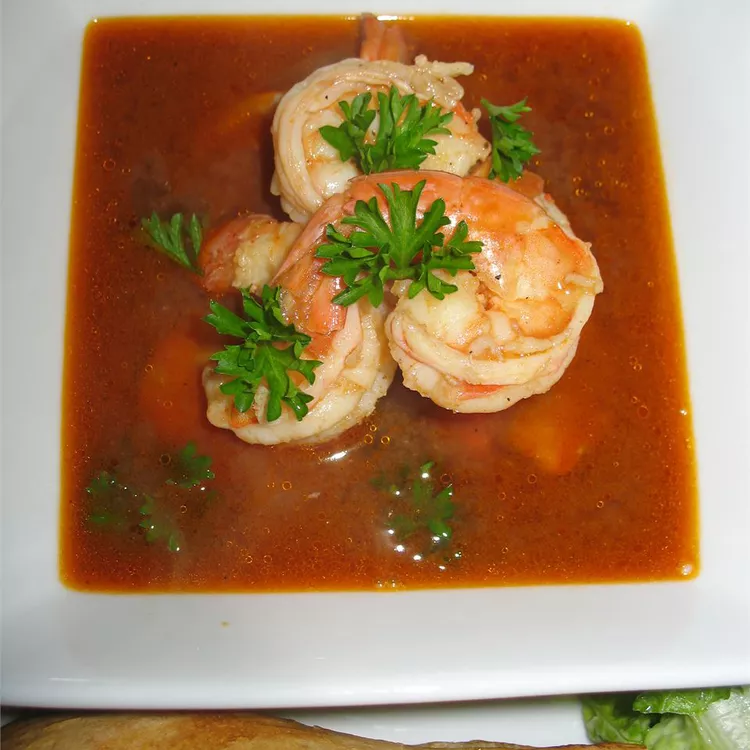

Shrimp Soup

Description
There's an awesome little restaurant in Marina Del Rey, California, that serves one thing—
shrimp soup. This spicy herb soup has lots of broth, flavor, and a little kick. This recipe is
the best. It doesn't need any fancy presentation. Simply ladle it into big bowls and serve
with some crusty bread to soak up the broth.
(excerpt from allrecipes.com)
Ingredients (Original Recipe)
- 2 quarts chicken broth
- 1 cup clam juice
- 1 cup unsalted butter
- ½ (6 ounce) can tomato paste
- 2 tablespoons minced rosemary
- 5 cloves garlic, minced
- 1 teaspoon ground black peppers
- 1 teaspoon celery seeds
- ½ teaspoon fennel seeds
- 1 cup white wine
- 2 pounds shrimp, with tails
- 1 (single pound) loaf of French bread
Steps
- Add broth, clam juice, butter, tomato paste, rosemary, garlic, black pepper,
celery seeds, and fennel seeds to a large pot. Bring to a boil, reduce heat to low,
and simmer for 1 hour, stirring occasionally.
- Stir wine into soup; simmer for 2 hours, stirring occasionally.
- Stir in shrimp; cook until shrimp are opaque, about 3 minutes. Serve immediately with bread.
Home